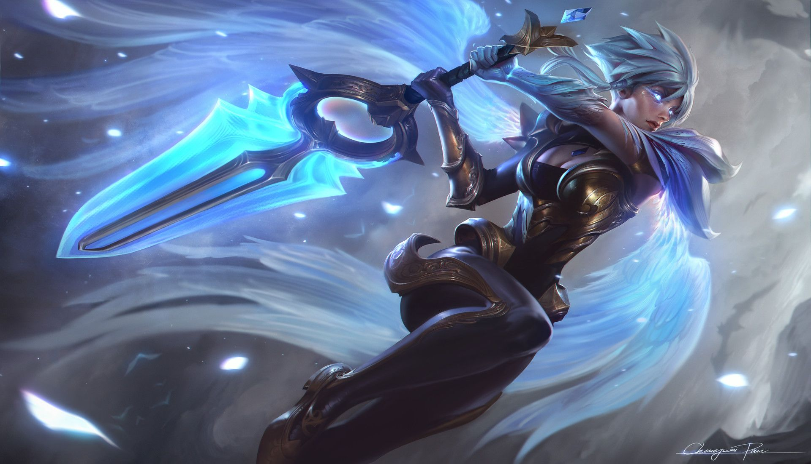
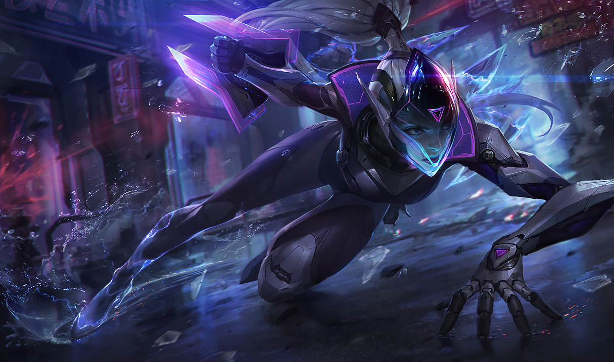
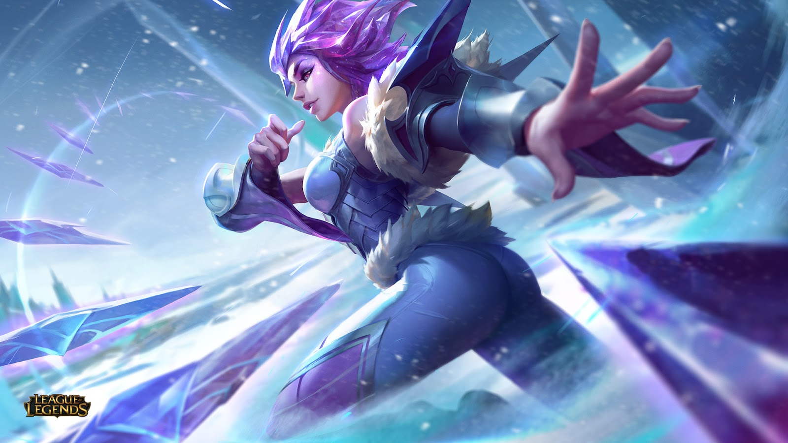
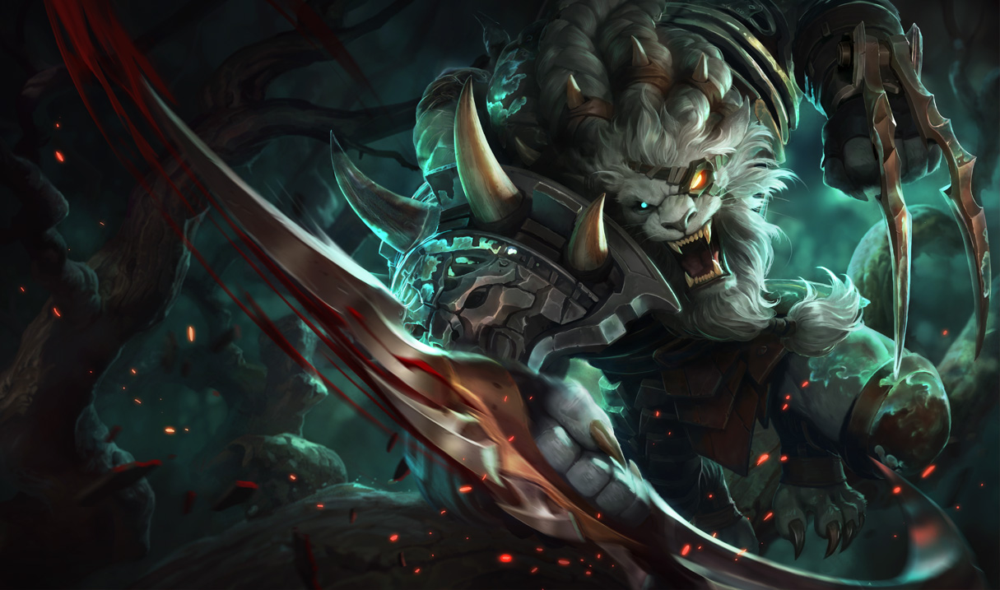
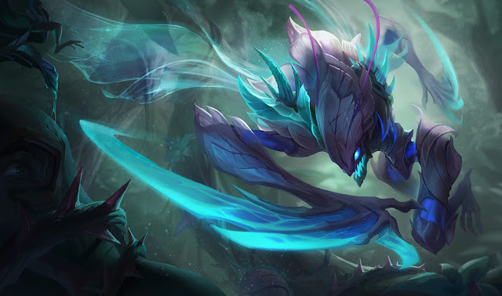

Riven

History:
Construída sobre um mar de conflitos, Noxus sempre teve órfãos de guerra para dar e vender. Depois de perder o pai em uma batalha qualquer e a mãe nas complicações de seu próprio nascimento, Riven foi criada em uma fazenda administrada pelo império nas encostas rochosas de Trevale.
Com muita força física e uma vontade de ferro, as crianças sobreviviam e trabalhavam naquela terra árida, mas Riven sonhava com mais do que apenas pão na mesa. Quando os recrutadores das milícias regionais vinham visitar as fazendas, ano após ano, ela os observava e via neles uma chance de ter a vida que sonhava. Quando finalmente jurou sua força ao império, Riven sabia que Noxus a aceitaria como a filha que ela tanto queria ser
Riven se mostrou uma soldada nata. Mesmo sendo tão jovem, seus anos de trabalho duro a ajudaram a dominar rapidamente o peso de uma espada maior do que ela. Sua nova família foi forjada no calor da batalha e, para Riven, sua ligação com seus irmãos e irmãs de guerra era inquebrável.
Sua dedicação ao império foi tão excepcional que o próprio Boram Darkwill reconheceu seu talento e, como recompensa, presenteou-lhe com uma espada rúnica de pedra negra, encantada por uma pálida feiticeira de sua corte. A arma era mais pesada e quase tão larga quanto um escudo gota — ou seja, exatamente como Riven gostava.
Pouco tempo depois, os grupos de guerra decidiram navegar até Ionia como parte da tão esperada invasão noxiana.
À medida que a guerra se desenrolava, ficou claro que Ionia não cederia. A unidade de Riven foi incumbida de escoltar outra tropa que tentava chegar à Navori, província preparada para a guerra. O líder da tropa, Emystan, empregara um alquimista zaunita que estava louco para testar um novo tipo de arma Em todas as outras campanhas, Riven teria dado sua vida por Noxus sem hesitar, mas desta vez ela percebeu algo de estranho naqueles soldados — algo que a deixou extremamente desconfortável. Eles carregavam delicadas ânforas em seus vagões e ela não conseguia imaginar que utilidade elas poderiam ter no campo de batalha...
As duas milícias começaram a encontrar obstáculos cada vez mais desafiadores, como se o próprio solo estivesse contra eles. Certo dia, durante uma forte tempestade, com lama escorrendo pelas encostas da montanha, Riven e seus guerreiros ficaram presos com sua carga mortal — e foi então que os guerreiros ionianos se revelaram. Percebendo o perigo, Riven pediu reforço a Emystan.
Mas a única resposta que ela recebeu foi uma flecha em chamas, disparada do topo da colina. Foi então que Riven entendeu que não se tratava mais de uma guerra para expandir os limites de Noxus. O objetivo era o extermínio total do inimigo - e a qualquer custo.
Log in to buy
Vayne

History:
Shauna Vayne é uma caçadora de monstros mortal e implacável que dedicou sua vida a encontrar e matar o demônio que assassinou sua família. Armada com bestas de pulso e um coração cheio de vingança, Vayne só fica verdadeiramente feliz quando está matando criações ou praticantes das artes obscuras.
Filha única de um abastado casal demaciano, Vayne desfrutou de uma infância privilegiada. Ela passou a maior parte da infância realizando atividades solitárias — lendo, aprendendo música e colecionando avidamente os vários insetos que encontrava no terreno de sua mansão. Seus pais tinham viajado por toda Runeterra na juventude, mas se estabeleceram em Demacia depois do nascimento de Shauna, pois nunca tinham conhecido um povo que cuidasse tanto uns dos outros quanto os demacianos.
Pouco depois do seu aniversário de dezesseis anos, quando Vayne voltava para casa de um banquete de solstício de verão, ela viu algo que nunca esqueceria.
Uma mulher com chifres e indescritivelmente bela estava parada diante dos corpos ensanguentados de seus pais.
Vayne soltou um grito de aflição e pavor. Antes de desaparecer, o demônio olhou para a jovem menina e deu um sorriso terrível e lascivo
Vayne tentou retirar o cabelo ensanguentado dos olhos da mãe, mas aquele sorriso sombrio não saía de sua cabeça, apenas crescia e a consumia. Até mesmo enquanto ela fechava suavemente os olhos do pai– sua boca ainda entreaberta, paralisada em seus últimos terríveis momentos de confusão– o sorriso do demônio ainda surgia em sua mente.
Era um sorriso que viria a encher as veias de Shauna de ódio pelo resto dos seus dias.
Log in to buy
Irelia

History:
Já quando criança, Xan Irelia era fascinada pela graça e beleza do movimento humano. Sob a tutela de sua avó, ela aprendeu as danças de seda tradicionais de sua província. Ainda que ela duvidasse um pouco da conexão teoricamente mística de tal tradição com o Espírito de Ionia, o amor de Irelia pelas danças era absolutamente real. A fim de dominar a arte, ela saiu de casa para estudar com alguns dos dançarinos mais respeitados de Ionia no Placídio de Navori.
O povo de Irelia era pacífico e buscava a harmonia com seus vizinhos, mas os rumores sobre a presença de invasores estrangeiros na costa perturbavam muitos habitantes no Placídio. Quando Irelia voltou ao seu vilarejo, ele já estava ocupado - soldados com armaduras de ferro vindos da longínqua Noxus ameaçavam civis desarmados nas ruas com o cabo de suas lanças. O Almirante noxiano Duqal tinha tomado o lar dos Xan para acomodar seus soldados.
Os irmãos de Irelia e seu pai, Lito, obviamente tinham protestado, e agora toda a sua família jazia em covas anônimas nos jardins do vilarejo.
Tomada pelo luto, a jovem viu os homens de Duqal transportando bens de valor de dentro de sua casa. Entre os bens saqueados estava uma grande insígnia de metal com o brasão da família Xan. Irelia correu em direção aos noxianos, tentando arrancar o objeto das mãos deles. O almirante a jogou no chão e mandou seus soldados destruírem a insígnia com um grande martelo de ferro, além de ordenar a escavação de uma nova cova para aquela criança rebelde.
Quando os homens a cercaram, Irelia desviou o olhar, olhando apenas para as peças da insígnia Xan espalhadas pelo chão. Ela sentiu um ritmo estranho pulsar nas profundezas de sua alma. Os fragmentos de metal começaram a se mexer, a se retorcer, a voar por conta própria, e Irelia sentiu novamente a paz serena das antigas danças...
Com um único movimento de seu braço, ela fez as peças voarem como lâminas serradas que cortaram fundo dois dos noxianos ali presentes. Ao que Duqal e seus soldados recuaram em choque, Irelia recolheu os fragmentos da insígnia e fugiu do vilarejo.
Nas silenciosas florestas para além de seu lar, Irelia chorou por sua família e começou a lembrar dos ensinamentos de sua avó. Ela percebeu que as técnicas que aprendera eram mais do que meras danças: eram uma expressão poderosa de algo muito maior.
Log in to buy
Rengar

History:
Rengar é um feroz caçador de troféus vastayês que vive pela emoção de caçar e abater criaturas perigosas. Ele passa seus dias vasculhando o mundo em busca das criaturas mais temíveis que pode encontrar e, principalmente, em busca de Kha'Zix, a criatura do Vazio que arrancou seu olho. Rengar não persegue suas presas por comida nem por glória, mas pela simples emoção da caçada.
Ele nasceu em uma tribo vastaya shurimane conhecida como Kiilash, cuja sociedade venerava a honra e a glória da caçada. Ele foi o menor filhote da ninhada de Ponjaf, o chefe da tribo, que acreditava que, devido à baixa estatura, Rengar seria um péssimo caçador. Ele decidiu ignorar a criança, pensando que assim ela morreria de fome.
No fim, o jovem Rengar deixou o acampamento, envergonhado por ter decepcionado o pai. Por semanas, ele sobreviveu comendo larvas e plantas, até que um dia quase foi morto por um lendário caçador humano chamado Markon. Ao ver o estado de Rengar, o caçador teve pena da criatura e resolveu poupar-lhe a vida. Além disso, aquele não era um poderoso guerreiro vastayês digno de sua lâmina.
Rengar passou meses seguindo Markon e alimentando-se dos corpos que o caçador deixava para trás. Rengar ainda tinha esperanças de um dia retornar à sua tribo, por isso ele observava com muita atenção como Markon abatia suas vítimas.
Depois de algum tempo, Markon cansou-se daquele Kiilash patético que não parava de segui-lo. Assim, ele colocou uma faca no pescoço de Rengar e disse-lhe que a única forma de tornar-se um caçador era caçando. Em seguida, ele jogou a faca para Rengar e o empurrou em um desfiladeiro, onde ele precisou abater sua primeira presa para sobreviver.
A partir dali, Rengar passou anos se dedicando e se esforçando praticamente à exaustão. Ele vasculhava Shurima em busca das presas mais poderosas e perigosas. Sabendo que nunca seria tão grande quanto os outros Kiilash, Rengar estava determinado a ser duas vezes mais feroz. Com o passar do tempo, em vez de voltar ao seu acampamento sempre com novas cicatrizes, ele começou a voltar com troféus. Ele poliu o crânio de um falcão das areias até ficar brilhando e amarrou os dentes de um gritante alado em seus cabelos.
Então, quando achou que o momento havia chegado, Rengar voltou para sua tribo, pronto para ser aceito como um verdadeiro caçador.
Ponjaf zombou de Rengar e de seus troféus. Ele decretou que Rengar só seria acolhido na tribo se trouxesse a cabeça de uma escorregadia e lendária abominação do Vazio conhecida como Kha'Zix.
Cego pelo desejo de voltar para sua tribo, Rengar deixou que a astuta fera o pegasse desprevenido, e a criatura arrancou um dos seus olhos e fugiu. Furioso e derrotado, Rengar admitiu seu fracasso para Ponjaf. Como era esperado, seu pai o repreendeu severamente.
Mas enquanto Ponjaf falava, Rengar notou que todos os troféus expostos na cabana do seu pai estavam empoeirados e velhos. O chefe da tribo não caçava nada há anos e provavelmente mandara Rengar em busca da criatura porque ele próprio não tinha coragem.
Rengar interrompeu o pai e o chamou de covarde. Muitos Kiilash desfrutavam de corpos fortes e lares confortáveis. Mas, Rengar, ao contrário, já havia nascido enfrentando a morte. Ele havia aprendido sozinho a caçar e tinha troféus e cicatrizes para provar. Até sua cavidade ocular manchada de sangue era um troféu — prova de que, embora Rengar tivesse nascido com desvantagens, ele nunca desistiu.
Log in to buy
Kha'zix

History:
Kha'Zix, um predador perverso do Vazio, se infiltrou em Valoran para devorar as criaturas mais promissoras desta terra. A cada abate, ele devora a força de sua presa e se torna mais poderoso. Rengar, a única criatura a qual ele considera seu equivalente, é o que ele mais deseja conquistar e consumir.
Quando Kha'Zix cruzou a fronteira para este mundo, ele estava frágil e faminto. Os animais que ele encontrou no início eram pequenos demais para abastecer a evolução rápida que ele almejava. Kha'Zix concentrou sua fome nas criaturas mais perigosas que ele pôde encontrar, arriscando a própria vida para satisfazer sua necessidade. Com cada um dos abates ele se deliciou e mudou, tornando-se um predador mais rápido e forte. Em pouco tempo ele passou a caçar suas presas com agressão sem limites, acreditando ser irrefreável. Certo dia, enquanto saboreava uma presa recém-abatida, o predador se tornou a caça. O borrão de um bote com presas e metais o levou ao chão, rugindo em sua face enquanto golpeava e rasgava sua pele. Foi quando Kha'Zix sentiu seu sangue ser derramado pela primeira vez. Com um grito agudo de fúria, ele cravou suas garras no olho de seu atacante, jogando-o para trás. E assim lutaram do nascer ao por do sol. Ao fim, muito próximos da morte, eles relutantemente se separaram. Enquanto suas feridas se fechavam, Kha'Zix queimava de ansiedade com a ideia de devorar aquele cuja força se equiparava com a do Vazio. Ele continuou sua busca por presas poderosas e vigor renovado. Quando o dia certo chegar, Kha'Zix fará de Rengar o seu banquete.
Log in to buy